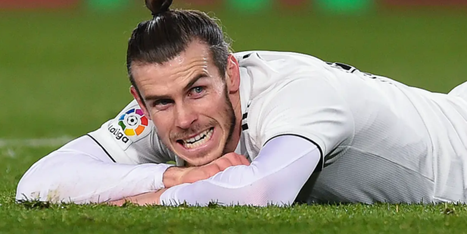

|  |
Gerard BaleGareth Frank Bale (born 16 July 1989) is a Welsh footballer who plays as an attacking winger for Real Madrid in the Spanish League, and he is the captain of the Wales national football team. Known for his long-distance shots, free kicks, and ability to pass defenders with speed, Bale was well received by his peers, who described him as a footballer who "has tremendous speed, superb crossing ability, great left foot and exceptional physical qualities. |
|---|